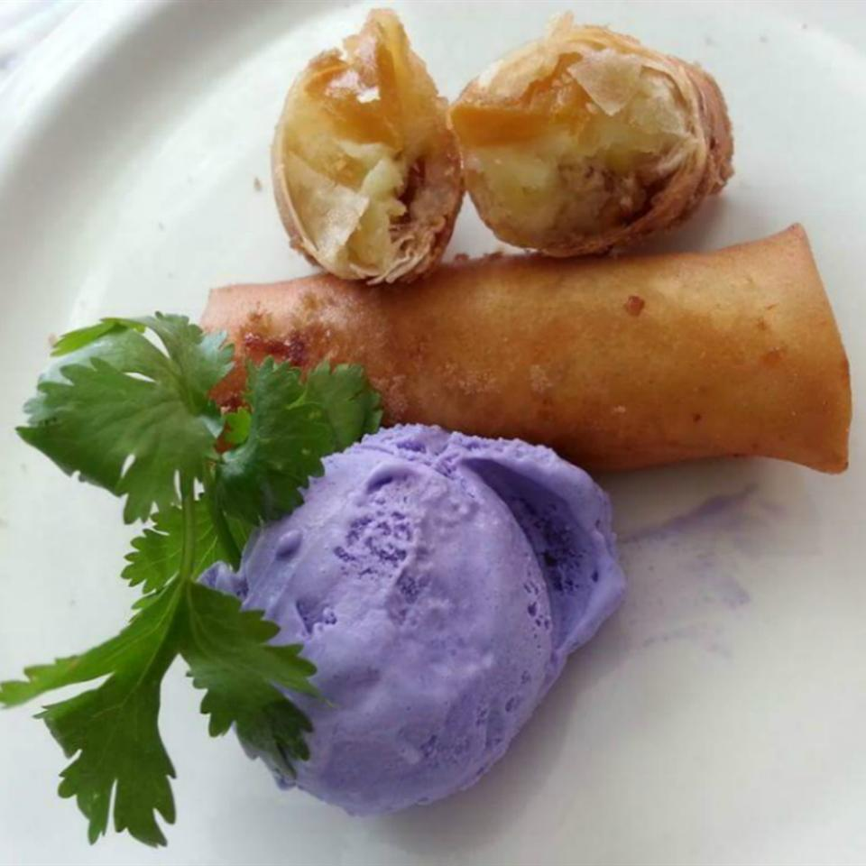

Banana Lumpia

Description
This is a Filipino dish. Deep fried wrapped banana pastry. It goes well with a scoop of ice cream.
Ingredients
- Oil for deep frying
- 6 large bananas, halved crosswise and then lengthwise
- 24 lumpia wrappers, defrosted
- 4 tablespoon water, or as needed
Steps
- Heat oil in a deep-fryer or large saucepan to 350 degrees F (175 degrees C).
- Place brown sugar in a shallow bowl.
- Roll each banana quarter in the brown sugar until coated.
- Wrap a lumpia wrapper around each coated banana, sealing the last edge to the roll using a spoon or your finger dipped in water.
- Repeat with the remaining bananas and wrappers.
- Working in batches, fry lumpia in the hot oil until golden brown, about 5 minutes. Transfer cooked lumpia to a paper towel-lined plate using a slotted spoon. Some sugar may leak out the sides of the lumpia while cooling.
Notes
If your bananas are small you may not want to cut them crosswise and will probably need more of them.
Use a beaten egg in place of the water for sealing, if desired.
Nutrition Facts
Per Serving:
275 calories; protein 3.5g; carbohydrates 41.6g; fat 11.7g; cholesterol 2.2mg; sodium 139.6mg.